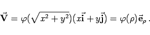

Inhalt Index DeskTop Bronstein

 Vektoranalysis und Feldtheorie Grundbegriffe der Feldtheorie Vektorfelder Übergang von einem Koordinatensystem zu einem anderen
Vektoranalysis und Feldtheorie Grundbegriffe der Feldtheorie Vektorfelder Übergang von einem Koordinatensystem zu einem anderen


| (13.22) |
| (13.23) |
Untersuchungen in Kugelfeldern führt man vorteilhafterweise unter Verwendung von Kugelkoordinaten durch, d.h. mit , Untersuchungen in Zylinderfeldern unter Verwendung von Zylinderkoordinaten, d.h. mit . Für ebene Felder (s. Abbildung)
gilt
| (13.24) |
für Kreisfelder
|  | (13.25) |